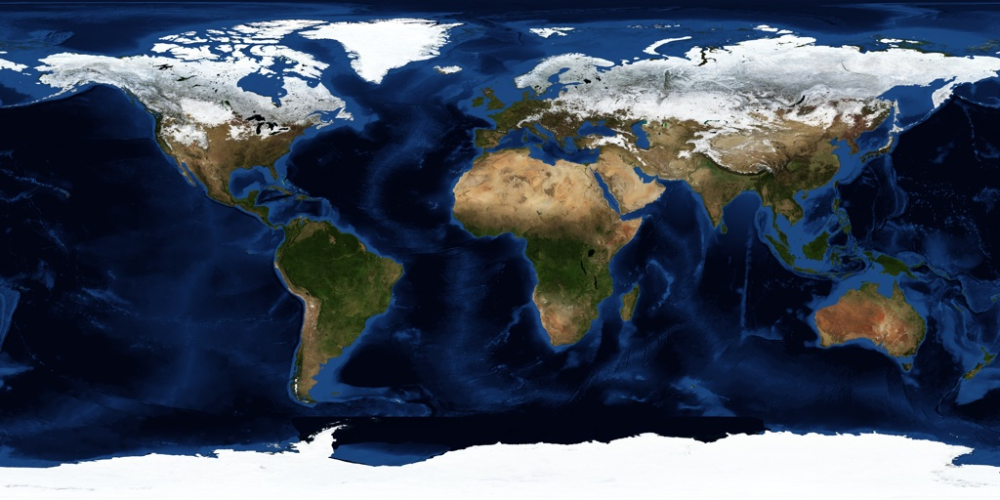

Raster map reprojection (warping) with JavaScript in a web-browser with HTML5 Canvas
Copyright © 2009 -
Klokan Petr Pridal
(
MapTiler.com
) (24 Oct 2009) - FOSS4G Code Sprint, Sydney
Press a button to calculate the transformation in your browser:
Use web workers (works in Chome 6+, Firefox 4.01b and Opera 10.70)
0
%
Input: unprojected raster image with dimmension 1024 x 512 pixels:

Output: projected image calculated dynamically in JavaScript: